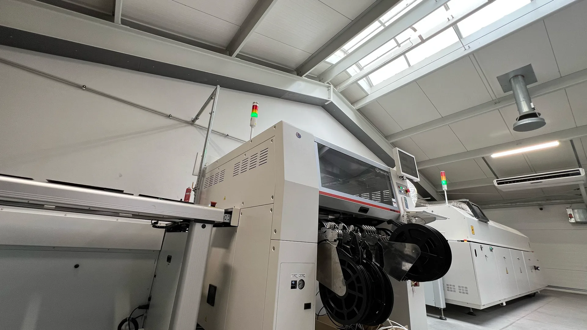
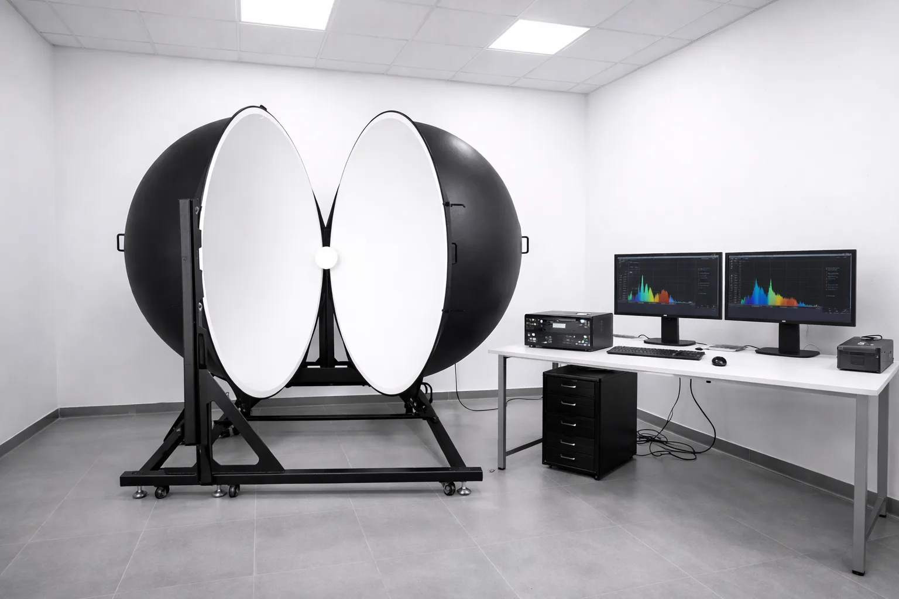

01 / PRODUKCJAPrecyzja zaczyna się
Precyzja zaczyna się
na naszej linii.
Dobór komponentów, montaż SMT i kontrola gotowego produktu. Własne zaplecze pozwala nam pracować nad taśmą od projektu do wykonania.
03 — ZAPLECZE PRESCOT
Własna linia montażowa i laboratorium w Giżycku.
To tutaj powstają i są sprawdzane nasze taśmy.

Dobór komponentów, montaż SMT i kontrola gotowego produktu. Własne zaplecze pozwala nam pracować nad taśmą od projektu do wykonania.

PRESCOT LABStrumień świetlny, temperatura barwowa i oddawanie kolorów. Wyniki pomiarów pomagają opisać produkt i sprawdzić jego parametry.